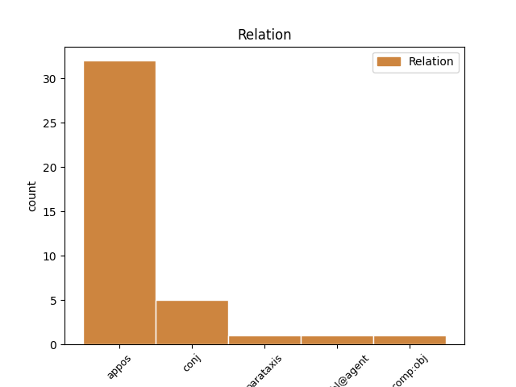
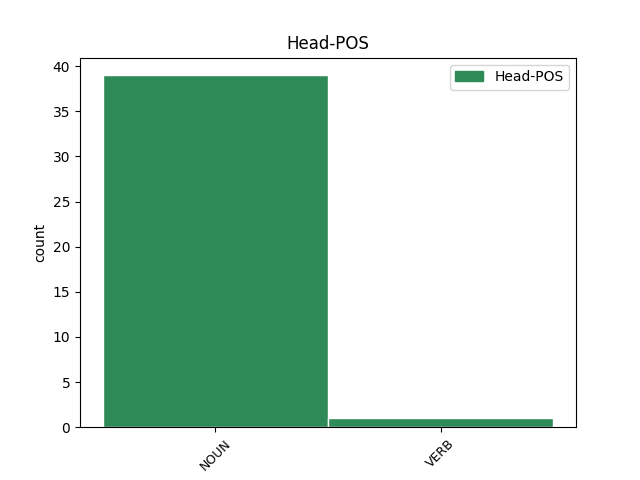
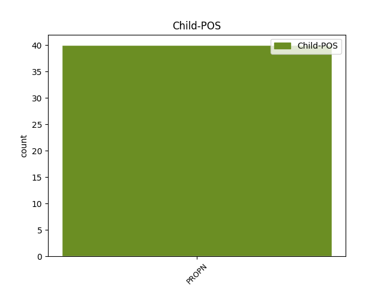

Distribution of features within this leaf



Agreement Rules sorted by frequency.
- When the dependent token is the appositional modifier(appos) of the head token, and the head token is NOUN and the dependent token is PROPN.
1 На _ _ _ _ 0 _ _ _
2 некаторых _ _ _ _ 0 _ _ _
3 з _ _ _ _ 0 _ _ _
4 iх _ _ _ _ 0 _ _ _
5 спынiлася _ _ _ _ 0 _ _ _
6 ў _ _ _ _ 0 _ _ _
7 сваiм _ _ _ _ 0 _ _ _
8 выступленнi _ _ _ _ 0 _ _ _
9 на _ _ _ _ 0 _ _ _
10 калегii _ _ _ _ 0 _ _ _
11 старшыня старшыня NOUN NN Animacy=Anim|Case=Nom|Gender=Masc|Number=Sing 0 _ _ _
12 Рэспублiканскага _ _ _ _ 0 _ _ _
13 камiтэта _ _ _ _ 0 _ _ _
14 Беларускага _ _ _ _ 0 _ _ _
15 прафсаюза _ _ _ _ 0 _ _ _
16 работнiкаў _ _ _ _ 0 _ _ _
17 аховы _ _ _ _ 0 _ _ _
18 здароўя _ _ _ _ 0 _ _ _
19 Алена Алена PROPN NNP Animacy=Anim|Case=Nom|Gender=Fem|Number=Sing 11 appos _ _
20 Бельская _ _ _ _ 0 _ _ _
21 . _ _ _ _ 0 _ _ _
1 Пастанова _ _ _ _ 0 _ _ _
2 таксама _ _ _ _ 0 _ _ _
3 прадугледжвае _ _ _ _ 0 _ _ _
4 распрацоўку _ _ _ _ 0 _ _ _
5 мінэканомікі мінэканомікі NOUN NN Animacy=Inan|Case=Ins|Gender=Masc|Number=Sing 0 _ _ _
6 , _ _ _ _ 0 _ _ _
7 Нацбанкам Нацбанк PROPN NNP Animacy=Inan|Case=Ins|Gender=Masc|Number=Sing 5 conj _ SpaceAfter=No
8 , _ _ _ _ 0 _ _ _
9 МЗС _ _ _ _ 0 _ _ _
10 і _ _ _ _ 0 _ _ _
11 мінфінам _ _ _ _ 0 _ _ _
12 парадку _ _ _ _ 0 _ _ _
13 ўліку _ _ _ _ 0 _ _ _
14 і _ _ _ _ 0 _ _ _
15 ўзгаднення _ _ _ _ 0 _ _ _
16 прыцягнення _ _ _ _ 0 _ _ _
17 знешніх _ _ _ _ 0 _ _ _
18 пазык _ _ _ _ 0 _ _ _
19 арганізацыямі _ _ _ _ 0 _ _ _
20 з _ _ _ _ 0 _ _ _
21 доляй _ _ _ _ 0 _ _ _
22 дзяржавы _ _ _ _ 0 _ _ _
23 ў _ _ _ _ 0 _ _ _
24 статутным _ _ _ _ 0 _ _ _
25 фондзе _ _ _ _ 0 _ _ _
26 . _ _ _ _ 0 _ _ _
1 Пераможца _ _ _ _ 0 _ _ _
2 леташняга _ _ _ _ 0 _ _ _
3 конкурсу _ _ _ _ 0 _ _ _
4 Азербайджан _ _ _ _ 0 _ _ _
5 і _ _ _ _ 0 _ _ _
6 краіны краіна NOUN NN Animacy=Inan|Case=Nom|Gender=Fem|Number=Plur 0 _ _ _
7 " _ _ _ _ 0 _ _ _
8 Вялікай _ _ _ _ 0 _ _ _
9 пяцёркі _ _ _ _ 0 _ _ _
10 " _ _ _ _ 0 _ _ _
11 -- _ _ _ _ 0 _ _ _
12 Францыя Францыя PROPN NNP Animacy=Inan|Case=Nom|Gender=Fem|Number=Sing 6 parataxis _ SpaceAfter=No
13 , _ _ _ _ 0 _ _ _
14 Вялікабрытанія _ _ _ _ 0 _ _ _
15 , _ _ _ _ 0 _ _ _
16 Германія _ _ _ _ 0 _ _ _
17 , _ _ _ _ 0 _ _ _
18 Італія _ _ _ _ 0 _ _ _
19 і _ _ _ _ 0 _ _ _
20 Іспанія _ _ _ _ 0 _ _ _
21 -- _ _ _ _ 0 _ _ _
22 возьмуць _ _ _ _ 0 _ _ _
23 удзел _ _ _ _ 0 _ _ _
24 непасрэдна _ _ _ _ 0 _ _ _
25 ў _ _ _ _ 0 _ _ _
26 фінале _ _ _ _ 0 _ _ _
27 конкурсу _ _ _ _ 0 _ _ _
28 26 _ _ _ _ 0 _ _ _
29 траўня _ _ _ _ 0 _ _ _
30 . _ _ _ _ 0 _ _ _
Disagree Examples:
1 Як _ _ _ _ 0 _ _ _
2 распавялі _ _ _ _ 0 _ _ _
3 ў _ _ _ _ 0 _ _ _
4 міністэрстве _ _ _ _ 0 _ _ _
5 эканомікі _ _ _ _ 0 _ _ _
6 , _ _ _ _ 0 _ _ _
7 у _ _ _ _ 0 _ _ _
8 рамках _ _ _ _ 0 _ _ _
9 цяперашняга _ _ _ _ 0 _ _ _
10 візіту _ _ _ _ 0 _ _ _
11 ў _ _ _ _ 0 _ _ _
12 Сеул _ _ _ _ 0 _ _ _
13 дырэктар _ _ _ _ 0 _ _ _
14 Нацыянальнага _ _ _ _ 0 _ _ _
15 агенцтва _ _ _ _ 0 _ _ _
16 інвестыцый _ _ _ _ 0 _ _ _
17 і _ _ _ _ 0 _ _ _
18 прыватызацыі _ _ _ _ 0 _ _ _
19 Дзмітры _ _ _ _ 0 _ _ _
20 Клеўжыц _ _ _ _ 0 _ _ _
21 прэзентаваў _ _ _ _ 0 _ _ _
22 інвестыцыйныя _ _ _ _ 0 _ _ _
23 магчымасці _ _ _ _ 0 _ _ _
24 Беларусі _ _ _ _ 0 _ _ _
25 і _ _ _ _ 0 _ _ _
26 правёў _ _ _ _ 0 _ _ _
27 перамовы _ _ _ _ 0 _ _ _
28 з _ _ _ _ 0 _ _ _
29 намеснікам _ _ _ _ 0 _ _ _
30 міністра _ _ _ _ 0 _ _ _
31 інтэлектуальнай _ _ _ _ 0 _ _ _
32 эканомікі _ _ _ _ 0 _ _ _
33 Рэспублікі рэспубліка NOUN NN Animacy=Inan|Case=Gen|Gender=Fem|Number=Sing 0 _ _ _
34 Карэя Карэя PROPN NNP Animacy=Inan|Case=Nom|Gender=Fem|Number=Sing 33 appos _ _
35 Мун _ _ _ _ 0 _ _ _
36 Чжэ _ _ _ _ 0 _ _ _
37 До _ _ _ _ 0 _ _ _
38 , _ _ _ _ 0 _ _ _
39 віцэ-прэзідэнтам _ _ _ _ 0 _ _ _
40 Карэйскага _ _ _ _ 0 _ _ _
41 агенцтва _ _ _ _ 0 _ _ _
42 па _ _ _ _ 0 _ _ _
43 прасоўванні _ _ _ _ 0 _ _ _
44 гандлю _ _ _ _ 0 _ _ _
45 і _ _ _ _ 0 _ _ _
46 інвестыцый _ _ _ _ 0 _ _ _
47 ( _ _ _ _ 0 _ _ _
48 KOTRA _ _ _ _ 0 _ _ _
49 ) _ _ _ _ 0 _ _ _
50 О _ _ _ _ 0 _ _ _
51 Сон _ _ _ _ 0 _ _ _
52 Гынам _ _ _ _ 0 _ _ _
53 і _ _ _ _ 0 _ _ _
54 радам _ _ _ _ 0 _ _ _
55 мясцовых _ _ _ _ 0 _ _ _
56 бізнэсоўцаў _ _ _ _ 0 _ _ _
57 . _ _ _ _ 0 _ _ _
1 Згодна _ _ _ _ 0 _ _ _
2 з _ _ _ _ 0 _ _ _
3 дакументам _ _ _ _ 0 _ _ _
4 , _ _ _ _ 0 _ _ _
5 мінэканомікі _ _ _ _ 0 _ _ _
6 , _ _ _ _ 0 _ _ _
7 Нацбанк _ _ _ _ 0 _ _ _
8 і _ _ _ _ 0 _ _ _
9 мінфін _ _ _ _ 0 _ _ _
10 будуць _ _ _ _ 0 _ _ _
11 пастаянна _ _ _ _ 0 _ _ _
12 прыцягваць _ _ _ _ 0 _ _ _
13 міжнародныя _ _ _ _ 0 _ _ _
14 фінансавыя _ _ _ _ 0 _ _ _
15 арганізацыі _ _ _ _ 0 _ _ _
16 для _ _ _ _ 0 _ _ _
17 аналізу _ _ _ _ 0 _ _ _
18 сістэмы _ _ _ _ 0 _ _ _
19 кіравання _ _ _ _ 0 _ _ _
20 валавым _ _ _ _ 0 _ _ _
21 знешнім _ _ _ _ 0 _ _ _
22 доўгам доўг NOUN NN Animacy=Inan|Case=Ins|Gender=Masc|Number=Sing 0 _ _ _
23 ( _ _ _ _ 0 _ _ _
24 ВВД ВВД PROPN NNP Animacy=Inan|Case=Nom|Gender=Masc|Number=Sing 22 appos _ SpaceAfter=No
25 ) _ _ _ _ 0 _ _ _
26 і _ _ _ _ 0 _ _ _
27 вызначэння _ _ _ _ 0 _ _ _
28 далейшых _ _ _ _ 0 _ _ _
29 напрамкаў _ _ _ _ 0 _ _ _
30 яе _ _ _ _ 0 _ _ _
31 ўдасканалення _ _ _ _ 0 _ _ _
32 . _ _ _ _ 0 _ _ _
1 Беларусь _ _ _ _ 0 _ _ _
2 у _ _ _ _ 0 _ _ _
3 міжнародным _ _ _ _ 0 _ _ _
4 конкурсе конкурс NOUN NN Animacy=Inan|Case=Loc|Gender=Masc|Number=Sing 0 _ _ _
5 песні _ _ _ _ 0 _ _ _
6 " _ _ _ _ 0 _ _ _
7 Еўрабачанне Еўрабачанне PROPN NNP Animacy=Inan|Case=Nom|Gender=Neut|Number=Sing 4 appos _ SpaceAfter=No
8 - _ _ _ _ 0 _ _ _
9 2012 _ _ _ _ 0 _ _ _
10 " _ _ _ _ 0 _ _ _
11 выступіць _ _ _ _ 0 _ _ _
12 5-й _ _ _ _ 0 _ _ _
13 у _ _ _ _ 0 _ _ _
14 другім _ _ _ _ 0 _ _ _
15 паўфінале _ _ _ _ 0 _ _ _
16 , _ _ _ _ 0 _ _ _
17 які _ _ _ _ 0 _ _ _
18 пройдзе _ _ _ _ 0 _ _ _
19 24 _ _ _ _ 0 _ _ _
20 мая _ _ _ _ 0 _ _ _
21 ў _ _ _ _ 0 _ _ _
22 Баку _ _ _ _ 0 _ _ _
23 . _ _ _ _ 0 _ _ _
1 Паколькі _ _ _ _ 0 _ _ _
2 скарга _ _ _ _ 0 _ _ _
3 Уладзіслава _ _ _ _ 0 _ _ _
4 Кавалёва _ _ _ _ 0 _ _ _
5 Камітэтам _ _ _ _ 0 _ _ _
6 па _ _ _ _ 0 _ _ _
7 правах _ _ _ _ 0 _ _ _
8 чалавека _ _ _ _ 0 _ _ _
9 ААН _ _ _ _ 0 _ _ _
10 яшчэ _ _ _ _ 0 _ _ _
11 не _ _ _ _ 0 _ _ _
12 разглядалася _ _ _ _ 0 _ _ _
13 , _ _ _ _ 0 _ _ _
14 прывядзенне _ _ _ _ 0 _ _ _
15 ў _ _ _ _ 0 _ _ _
16 выкананне _ _ _ _ 0 _ _ _
17 смяротнага _ _ _ _ 0 _ _ _
18 пакарання _ _ _ _ 0 _ _ _
19 з'яўляецца _ _ _ _ 0 _ _ _
20 парушэннем _ _ _ _ 0 _ _ _
21 Міжнароднага _ _ _ _ 0 _ _ _
22 пакта _ _ _ _ 0 _ _ _
23 аб _ _ _ _ 0 _ _ _
24 грамадзянскіх _ _ _ _ 0 _ _ _
25 і _ _ _ _ 0 _ _ _
26 палітычных _ _ _ _ 0 _ _ _
27 правах _ _ _ _ 0 _ _ _
28 , _ _ _ _ 0 _ _ _
29 ратыфікаванага ратыфікаваць VERB VBNL Aspect=Perf|Case=Gen|Gender=Masc|Number=Sing|Tense=Past|VerbForm=Part|Voice=Pass 0 _ _ _
30 Беларуссю Беларусь PROPN NNP Animacy=Inan|Case=Ins|Gender=Fem|Number=Sing 29 comp:obl@agent _ SpaceAfter=No
31 . _ _ _ _ 0 _ _ _
1 " _ _ _ _ 0 _ _ _
2 Пазіцыя _ _ _ _ 0 _ _ _
3 Камітэта _ _ _ _ 0 _ _ _
4 па _ _ _ _ 0 _ _ _
5 правах _ _ _ _ 0 _ _ _
6 чалавека _ _ _ _ 0 _ _ _
7 з'яўляецца _ _ _ _ 0 _ _ _
8 адназначнай _ _ _ _ 0 _ _ _
9 -- _ _ _ _ 0 _ _ _
10 Беларусь _ _ _ _ 0 _ _ _
11 здзейсніла _ _ _ _ 0 _ _ _
12 сур'ёзныя _ _ _ _ 0 _ _ _
13 парушэнні _ _ _ _ 0 _ _ _
14 сваіх _ _ _ _ 0 _ _ _
15 юрыдычных _ _ _ _ 0 _ _ _
16 абавязацельстваў _ _ _ _ 0 _ _ _
17 , _ _ _ _ 0 _ _ _
18 пакарання пакаранне NOUN NN Animacy=Inan|Case=Gen|Gender=Neut|Number=Sing 0 _ _ _
19 Уладзіслава Уладзіслав PROPN NNP Animacy=Anim|Case=Acc|Gender=Masc|Number=Sing 18 comp:obj _ _
20 Кавалёва _ _ _ _ 0 _ _ _
21 " _ _ _ _ 0 _ _ _
22 , _ _ _ _ 0 _ _ _
23 -- _ _ _ _ 0 _ _ _
24 заявіла _ _ _ _ 0 _ _ _
25 старшыня _ _ _ _ 0 _ _ _
26 Камітэта _ _ _ _ 0 _ _ _
27 Зонке _ _ _ _ 0 _ _ _
28 Занэле _ _ _ _ 0 _ _ _
29 Маёдзіна _ _ _ _ 0 _ _ _
30 . _ _ _ _ 0 _ _ _